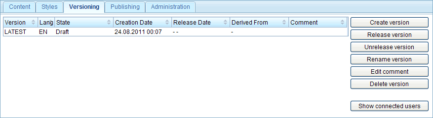
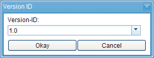
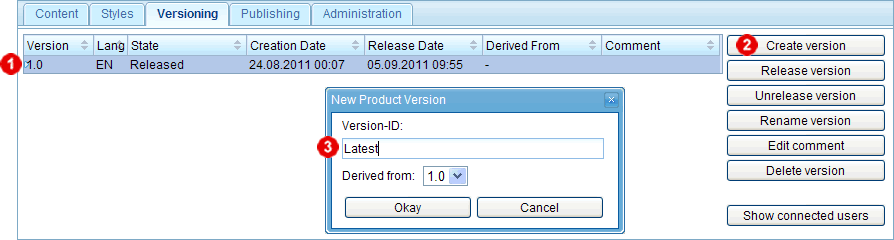
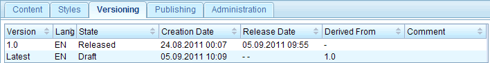
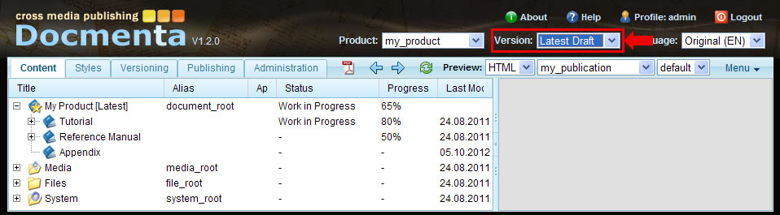
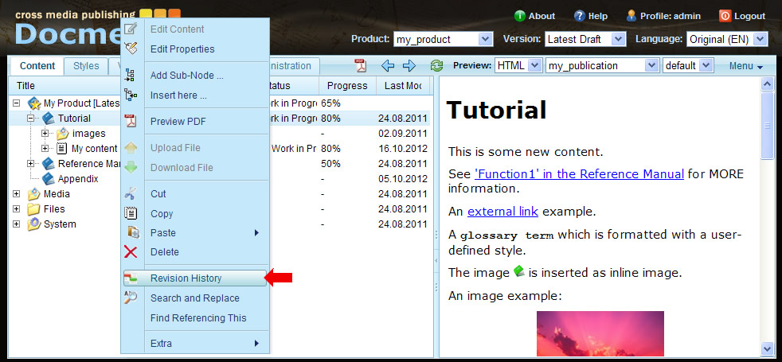
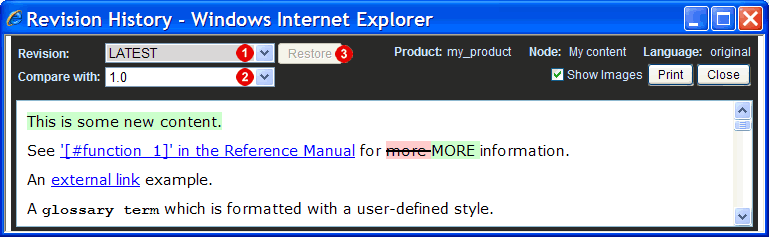

Chapter 1.6. Versions and revisions
As explained in Chapter 1.1, Installation and basic concepts, different versions of a product are just different snapshots of the complete product documentation which were created at different points in time. Besides the user-initiated creation of versions, Docmenta also stores the revision history of single content-nodes, i.e. each time the content of a node changes, Docmenta automatically stores a new revision of the node. This allows users to undo the latest modifications of a node by restoring an old revision of the node.
Draft and Released versions
A product version is either in state "Draft" or "Released". As long as the state is "Draft", the nodes within the product-tree can be edited. As soon as the state is "Released", the nodes are frozen, i.e. can no longer be modified.
Version identifiers
Each version is identified by a version-ID. After creating a new product, only a single version of this product exists which has by default the version-ID "Latest". The version-ID "Latest" is reserved for the most current draft version, i.e. the version with the most up to date content. When the state of the latest version is set to "Released", then the reserved version-ID "Latest" has to be replaced by an official version identifier, e.g. "1.0" (the first character of a version-ID has to be a letter or digit, for the remaining characters additionally the dash character, the underscore character and the dot character are allowed). Version identifiers are ordered, i.e. each version-ID is either equal to or higher than or lower than another version-ID. The ordering is based on the ordering of the ASCII character codes. Version-IDs are case insensitive, e.g. the version-ID "1a" denotes the same version than "1A". The version-ID "Latest" is by definition higher than all other version-IDs. Following list gives some examples of valid version-IDs in the correct order from lowest to highest:
- 0.1
- 1.0
- 1.0.14
- 1.0a
- 11.5_b
- Latest
As long as a version has the state "Draft", the Version-ID can be changed. As soon as the state is "Released", the Version-ID is fixed and can no longer be changed.
Releasing a version
In our tutorial example, only one version exists until now, which is still in state "Draft" and has the version-ID "Latest". We can freeze the content by setting the state of the version to "Released". To do this, switch to the "Versioning" workspace. This workspace shows a list of all existing versions of the currently opened product:

Figure 1.6.1. Versioning workspace
In our example, the list contains only one entry (the latest draft version). Select this entry and click the "Release version" button next to the list. This will open a dialog where you are asked to replace the version-ID "Latest" by an official version-ID. Enter the version-ID "1.0":

Figure 1.6.2. Release dialog
Click the "Okay" button to release the version "1.0". The content of the product is now frozen.
Deriving a new version
After some time you probably want to update the content for the next release, e.g. "1.1". To do this, you have to derive a new draft version from the released "1.0" version. Therefore, select the version "1.0" from the list  and click the "Create version" button next to the list
and click the "Create version" button next to the list  (see screenshot below).
(see screenshot below).

Figure 1.6.3. Creating a new version
In the following dialog you have to enter the version-ID of the new version that shall be created. You can enter the next upcoming official version-ID, e.g. "1.1", or select the dummy version-ID "Latest" from the drop-down list  . The only restriction is, that the entered version-ID has to be higher than the version-ID of the version it will be derived from (here: "1.0").
. The only restriction is, that the entered version-ID has to be higher than the version-ID of the version it will be derived from (here: "1.0").
Note that you can change the version-ID as long as the state of the version is "Draft". If you enter the dummy Version-ID "Latest", then an official version-ID will be requested when you set the version to "Released".
Click the "Okay" button to create the new draft version. The list in the workspace will now show two entries, one for version "1.0" and one for the latest draft version:

Figure 1.6.4. New draft version derived from version "1.0"
Now, switch back to the "Content" workspace. To update a content-node in the latest draft version, select the entry "Latest Draft" from the version listbox in the head-panel of the main window:

Figure 1.6.5. Opening the new draft version
Open the content-editor for the content-node in the "Tutorial" section and add the sentence "This is some new content." and save the content-node.
Comparing and restoring revisions
Docmenta has a compare-function which highlights the changes between two versions/revisions of a content- or section-node. To use this function, open the context menu, e.g. of the "Tutorial" section, and choose the menu item "Revision History":

Figure 1.6.6. Opening the revision history window
This will open the following revision history window:

Figure 1.6.7. Comparing two revisions/versions of a node
In the head-panel of the window, choose the version which you want to compare from the "Revisions" listbox . By default this is the currently opened version. Select the version or revision you want to compare with from the "Compare with" listbox . After a version or revision has been selected from both listboxes, the result of the comparison is shown in the area below the head-panel.
In the example shown in the screenshot above, the text "This is some new content." is highlighted with green background-color. Green color means that the content was added. Removed content is highlighted with red background-color and striked-through text. Changed content is highlighted with blue background-color.
For content-nodes it is possible to restore an old revision of the node (i.e. undo the latest modifications). If you have selected a content-node, then a "Restore" button is available next to the "Revision" listbox. To restore an old revision, select the revision from the "Revision" listbox and click the "Restore" button.
To close the revision history window, click the "Close" button in the head-panel.